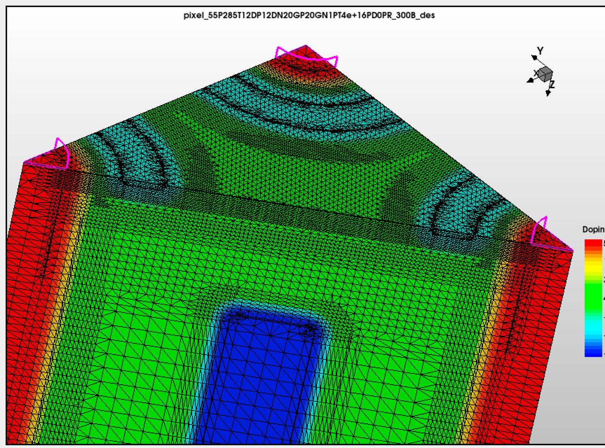
01 / Device
TCAD device simulation
Parametrised 3D sensor models for studying electric fields, depletion, geometry, and charge collection across candidate designs and operating conditions.
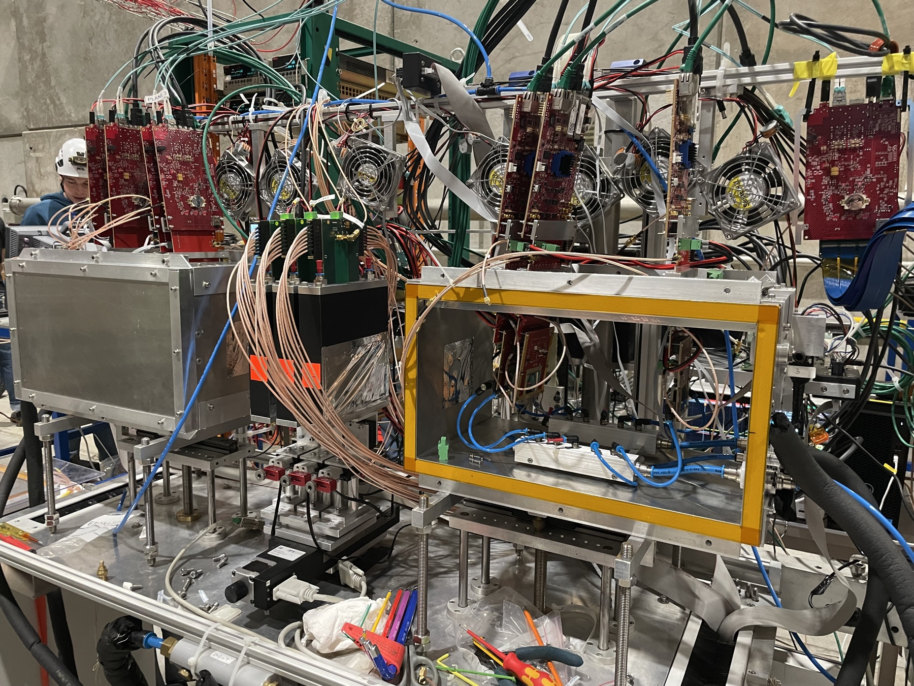
Particle physicist and PhD researcher developing fast 3D silicon sensors for the LHCb VELO Upgrade 2.
At CERN, I connect device simulation, signal modelling, and detector characterisation. Beyond the lab, I build useful technical projects and enjoy exploring how things work.
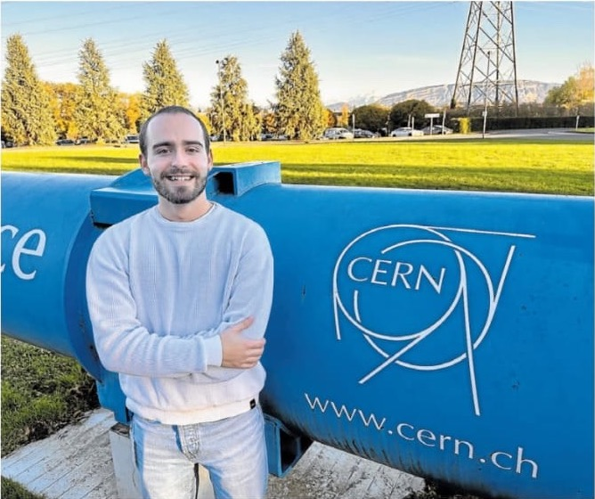
Current focus
I am exploring how sensor geometry, electric fields, and charge transport shape timing performance before a device is manufactured and tested. The work sits between simulation and measurement, with both sides informing the other.
Research
My PhD follows the full chain from a proposed sensor geometry to the induced signal, then back to the measurements that test the assumptions.

01 / Device
Parametrised 3D sensor models for studying electric fields, depletion, geometry, and charge collection across candidate designs and operating conditions.
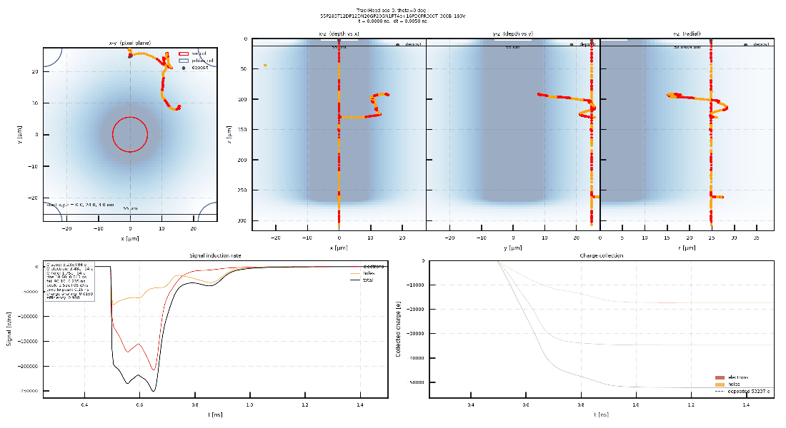
02 / Signal
Transporting charge through simulated fields to estimate induced current, timing response, and spatial performance before fabrication.
03 / Measurement
Connecting simulation assumptions to OPTIMA, Timepix4, laser and test-beam measurements, and to production discussions with sensor partners.
Selected work
From cosmology and detector characterisation to the simulation infrastructure behind my current research.
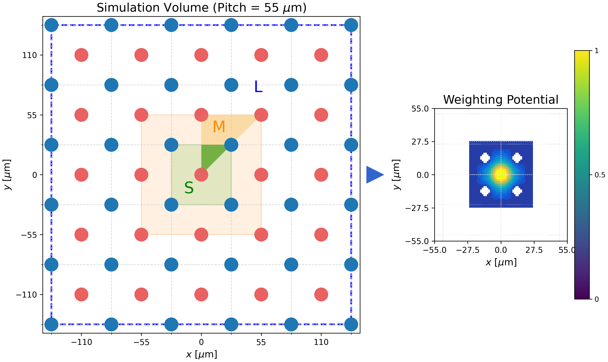
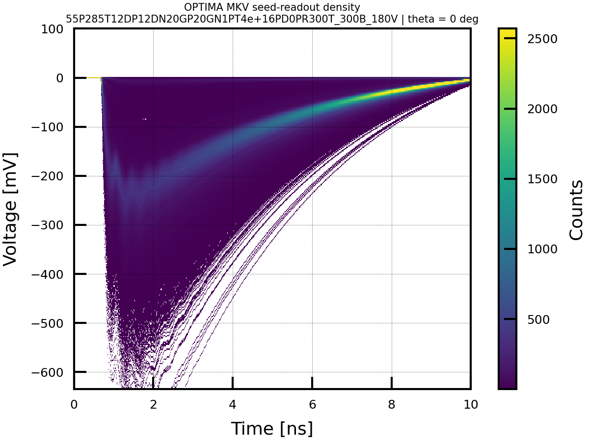
Bachelor thesis · Cosmology
Computing the cosmic microwave background power spectrum using a two-fluid approximation.
Master thesis · Detector physics
Analysis and detector characterisation connecting measured behaviour to physical device parameters.
Proceedings · JINST
A proceedings contribution bringing together the TCAD and Garfield++ results presented at TREDI.
PhD research · CERN
Parametrised device models, field extraction, and downstream signal simulations for comparing layouts and operating conditions.
Events
Schools and meetings where the work has been developed, discussed, and presented.
An intensive school on semiconductor detectors and simulation tools, combining lectures, research use cases, and hands-on sessions.
Event pagePresented work on 3D silicon sensor simulation, detector characterisation, and electronics to the Dutch subatomic physics community.
Slides PDFPoster on simulation-driven development of 3D silicon pixel sensors for the timing requirements of the LHCb VELO Upgrade 2.
Presented a poster on 3D silicon pixel sensors during a programme-wide meeting on detector technologies for future experiments.
Outreach
I enjoy sharing both the physics and the less visible path behind an international research career.
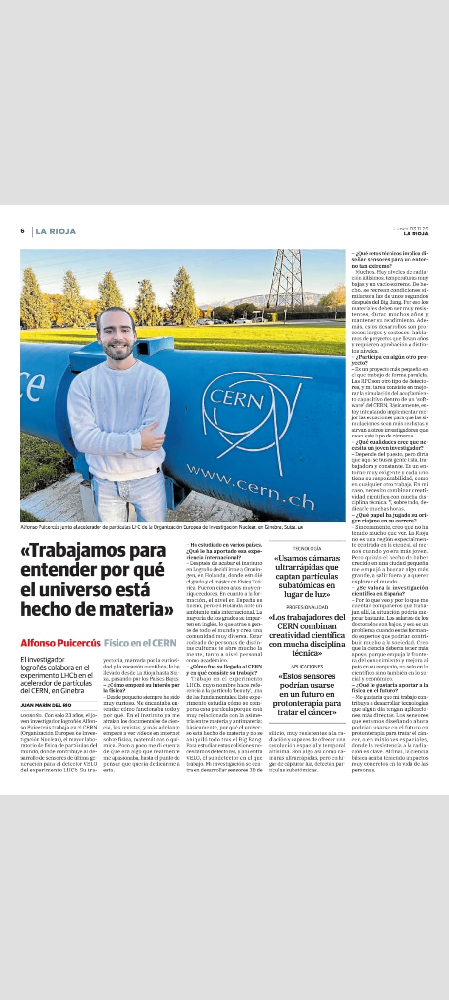
La Rioja · November 2025
An interview about studying physics, moving abroad, and starting a research path at CERN, as well as the detector technology behind the work.
Read the interviewDivulgaCiencia · La Rioja
I returned to speak with students about physics, studying abroad, and following ambitious ideas even when the route is not immediately obvious.
DivulgaCiencia programmeProjects
Software for interactive physics, research organisation, automation, and the personal systems I use every day.
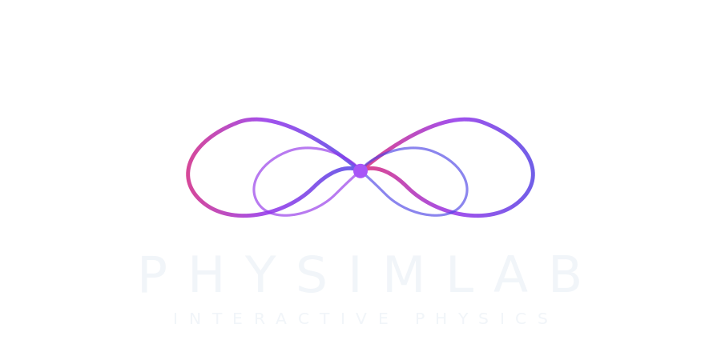
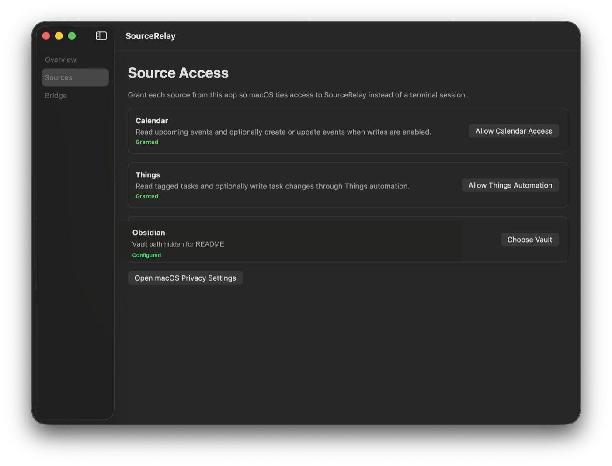
macOS · Swift
A local bridge that turns Calendar, Things 3, and Obsidian into one clean API for personal dashboards.
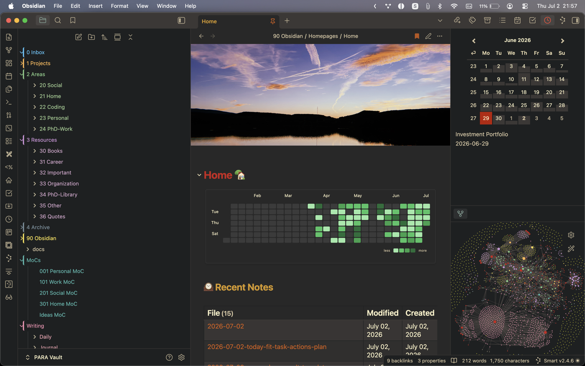
Obsidian · Research systems
A public vault template built around PARA, research dashboards, daily notes, and AI-readable context.
Python · Automation
A chat interface for quick task capture and lightweight control of a Vikunja task system.
Python · Cosmology
Code from my bachelor thesis for computing the CMB power spectrum with a two-fluid approximation.
Outside the lab
I like moving around the world and exploring places nearby or far away. Skiing, hiking, swimming, the gym, and a steady interest in technology keep the rest of life in motion.
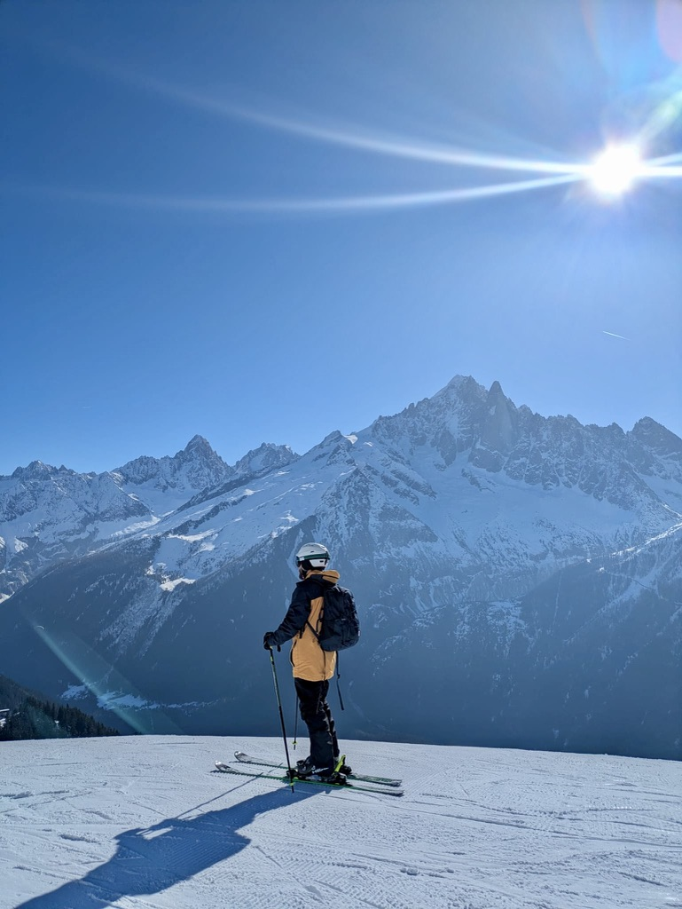
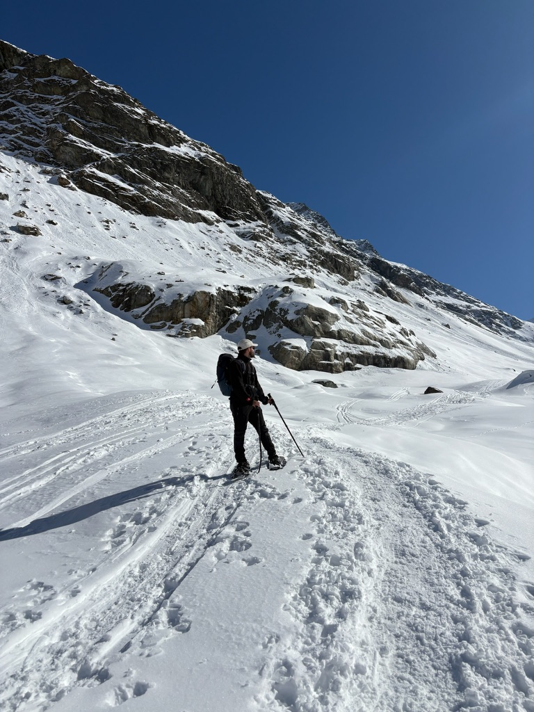
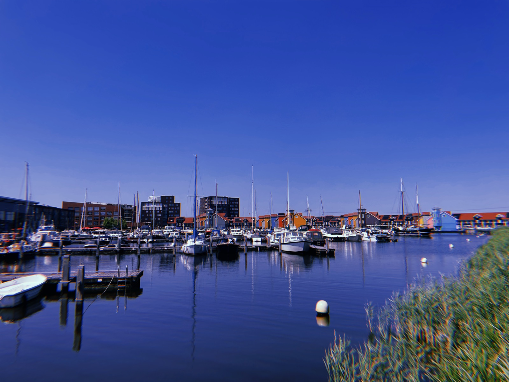
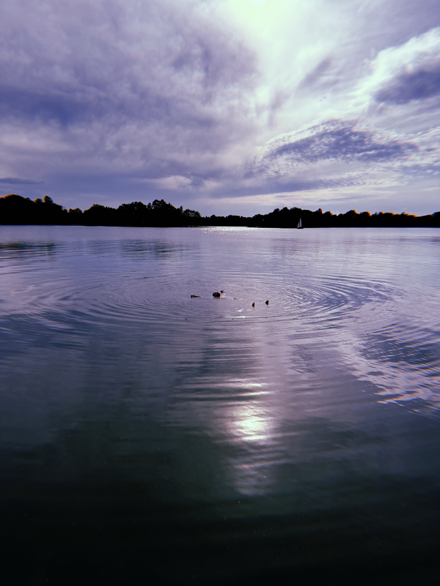
And then there are the things I keep inspecting for no practical reason at all: retro handhelds, compact computers, self-hosted tools, clever interfaces, and devices with unusually good engineering.
Travel · Nature · Skiing · Hiking · Swimming · Gym · TechnologyContact